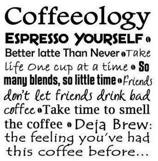
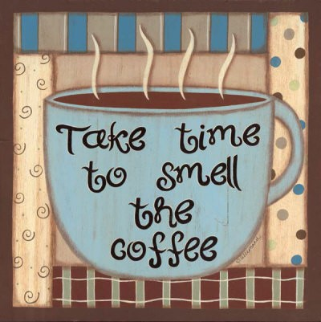
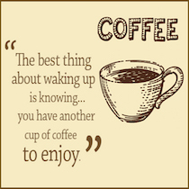
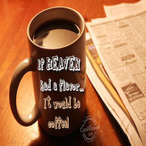
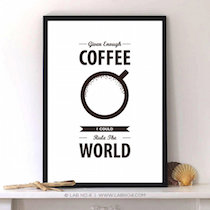

Many coffee purists will argue that brewing coffee using a French press
is the only way to brew coffee since it is far more accurate and all of the flavors and oils grounds are enhanced while the coffee is brewing. There are several factors that give French presses an advantage over their automatic cousins.
The French press is a great way to make strong and delicious coffee at home!
Coffee Quotes
Here are some coffee quotes for your enjoyment!





Coffee Shops in Kirland WA
As I was strolling by the Kirkland waterfront at about on a wet Saturday afternoon, I was looking for not just a good cup of coffee but a cozy corner in a cafe to sit down and enjoy my drink while surfing the web or doing my homework.